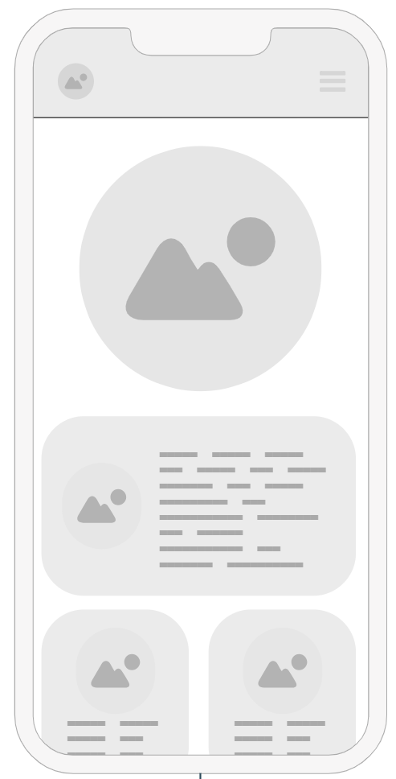
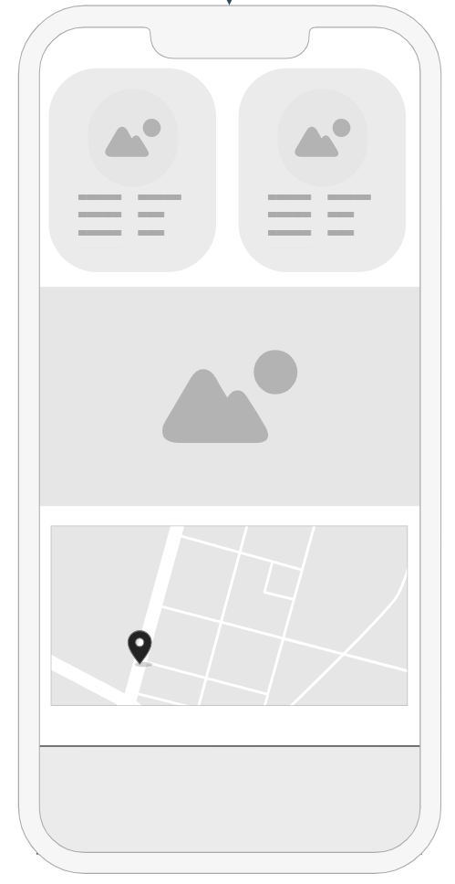
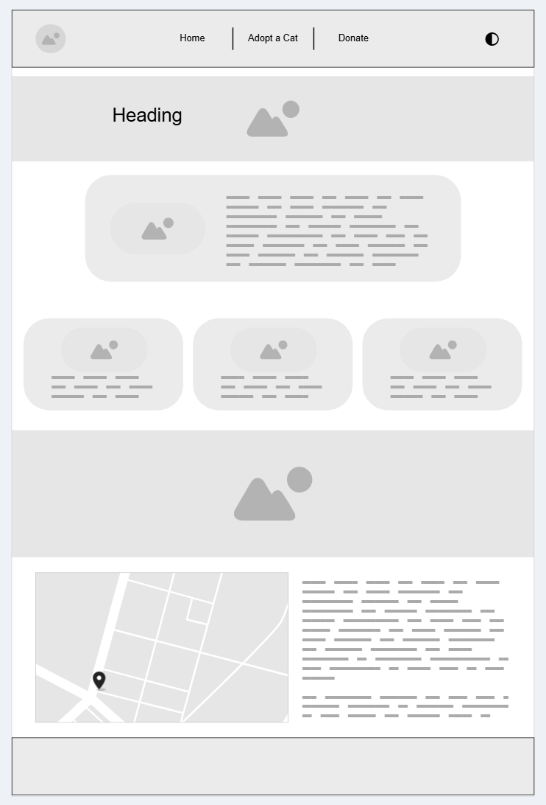

1. Site Name
Furry Hearts
Why this name? The name "Furry Hearts" was chosen because it reflects the warmth and emotional connection between people and rescued cats. It emphasizes both the furry nature of the animals and the heart involved in adoption and rescue. The name is short, memorable, and evokes compassion.
2. Site Purpose
Furry Hearts is a website that connects cat shelters, independent rescuers, and potential adopters. It provides a gallery of adoptable cats, an adoption form, educational resources, inspiring adoption stories, and donation options to support rescue work.
3. Scenarios
Visitors to the site may ask:
- Where can I see the cats that are currently available for adoption? The site will feature a gallery with photos and profiles of adoptable cats.
- How do I apply to adopt a cat from a rescuer or shelter? The site will offer an online application form for interested adopters.
- What kind of care does a newly adopted cat need? Educational resources will be available to guide new adopters.
- How can I support rescue efforts? Visitors will be able to donate through the site to help cats in need.
4. Color Schema
The website uses the following colors:
- Sandy Brown (#D9A87E): Used for lists and highlighting specific sections, giving a warm and friendly look.
- Almond Milk (#F2E8DC): Used as the main background color to provide a soft and welcoming atmosphere.
- Dark Blue (#223459): Used for headings and the footer to create contrast and reinforce visual hierarchy.
- Pacific Blue (#049DBF) or Sky Blue (#69C6DB): Used for buttons to grab users' attention and encourage interaction.
Note: Colors might be adjusted during the development process if needed.
5. Typography
The fonts selected for the site are:
- Raleway (Headings): A modern and elegant sans-serif font used for titles to give a clean and professional look.
- Open Sans (Body Text): A versatile and easy-to-read font used for paragraphs and general content, ensuring clarity.
6. Wireframes
The wireframes below represent the mobile and desktop versions of the site layout:
Mobile Version


Desktop Version
